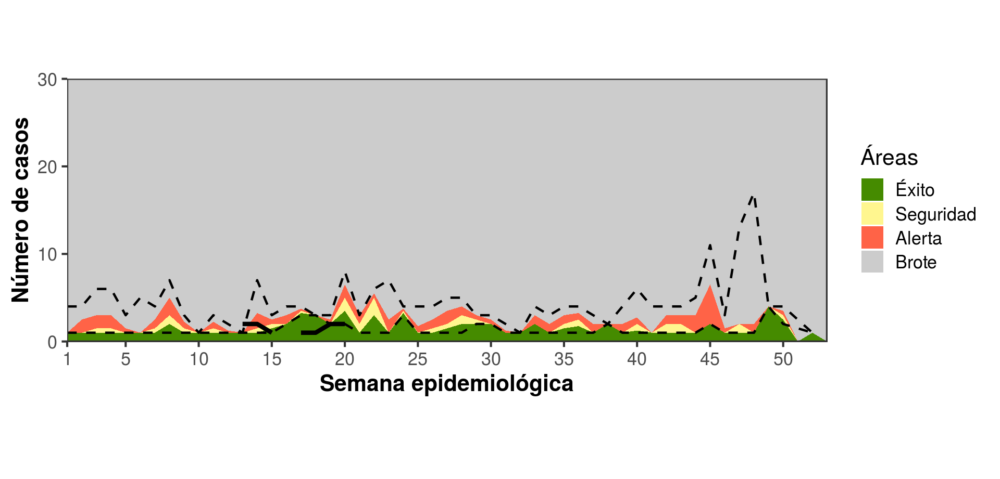
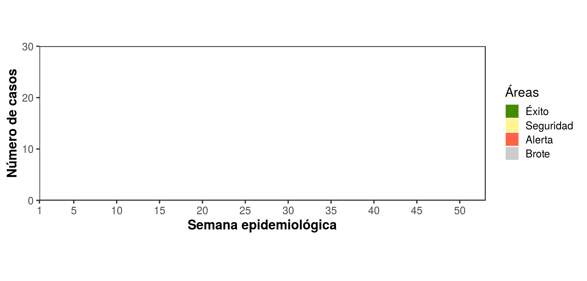
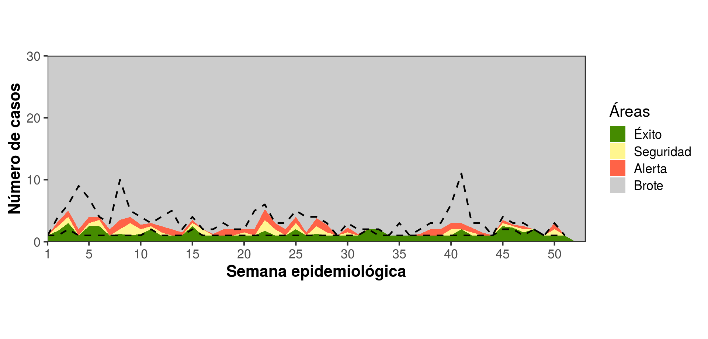
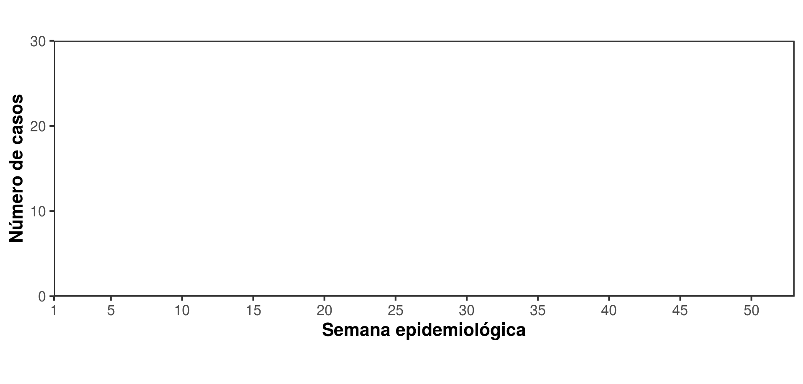

Patógenos detectados por los laboratorios, según sitio que detectó el caso.
| Etiología | Mes más reciente (agosto) (n, %) | Mes anterior (julio) (n, %) | Histórico (n, %) |
|---|---|---|---|
| Dengue | 0 / 0 (0) | 0 / 0 (0) | 367 / 486 (76) |
| Chikungunya | 0 / 0 (0) | 0 / 0 (0) | 16 / 247 (6) |
| Zika | 0 / 0 (0) | 0 / 4 (0) | 10 / 262 (4) |
| Malaria | 0 / 0 (0) | 0 / 0 (0) | 47 / 84 (56) |
| Leptospira | 0 / 0 (0) | 0 / 0 (0) | 33 / 693 (5) |
| Rickettsia | 0 / 0 (0) | 0 / 0 (0) | 14 / 14 (100) |
| Sin etiología determinada | 0 / 0 (0) | 0 / 0 (0) | 0 / 0 (0) |
| Pruebas pendientes** | 1 / 1 (100) | 4 / 4 (100) | 740 / 753 (98) |
| Etiología | Mes más reciente (agosto) (n, %) | Mes anterior (julio) (n, %) | Histórico (n, %) |
|---|---|---|---|
| Dengue | 0 / 0 (0) | 0 / 0 (0) | 1 / 1 (100) |
| Chikungunya | 0 / 0 (0) | 0 / 0 (0) | 0 / 0 (0) |
| Zika | 0 / 0 (0) | 0 / 0 (0) | 0 / 0 (0) |
| Malaria | 0 / 0 (0) | 0 / 0 (0) | 1 / 15 (7) |
| Leptospira | 0 / 0 (0) | 0 / 0 (0) | 1 / 32 (3) |
| Rickettsia | 0 / 0 (0) | 0 / 0 (0) | 0 / 0 (0) |
| Sin etiología determinada | 0 / 0 (0) | 0 / 0 (0) | 0 / 0 (0) |
| Pruebas pendientes** | 0 / 0 (0) | 0 / 0 (0) | 36 / 36 (100) |
| Etiología | Mes más reciente (agosto) (n, %) | Mes anterior (julio) (n, %) | Histórico (n, %) |
|---|---|---|---|
| Dengue | 0 / 0 (0) | 0 / 0 (0) | 63 / 260 (24) |
| Chikungunya | 0 / 0 (0) | 0 / 0 (0) | 59 / 205 (29) |
| Zika | 0 / 0 (0) | 0 / 1 (0) | 19 / 165 (12) |
| Malaria | 0 / 0 (0) | 0 / 0 (0) | 0 / 17 (0) |
| Leptospira | 0 / 0 (0) | 0 / 0 (0) | 25 / 369 (7) |
| Rickettsia | 0 / 0 (0) | 0 / 0 (0) | 6 / 6 (100) |
| Sin etiología determinada | 0 / 0 (0) | 0 / 0 (0) | 0 / 0 (0) |
| Pruebas pendientes** | 0 / 0 (0) | 1 / 1 (100) | 491 / 491 (100) |
| Etiología | Mes más reciente (agosto) (n, %) | Mes anterior (julio) (n, %) | Histórico (n, %) |
|---|---|---|---|
| Dengue | 0 / 0 (0) | 0 / 0 (0) | 0 / 0 (0) |
| Chikungunya | 0 / 0 (0) | 0 / 0 (0) | 0 / 0 (0) |
| Zika | 0 / 0 (0) | 0 / 0 (0) | 0 / 0 (0) |
| Malaria | 0 / 0 (0) | 0 / 0 (0) | 0 / 0 (0) |
| Leptospira | 0 / 0 (0) | 0 / 0 (0) | 0 / 0 (0) |
| Rickettsia | 0 / 0 (0) | 0 / 0 (0) | 0 / 0 (0) |
| Sin etiología determinada | 0 / 0 (0) | 0 / 0 (0) | 0 / 0 (0) |
| Pruebas pendientes** | 0 / 0 (0) | 0 / 0 (0) | 0 / 0 (0) |
Corredores endémicos para comparar comportamiento del año actual (línea negra sólida) con el comportamiento de los 6 años anteriores (2010 a 2016). Las líneas punteadas definen el intervalo de mínimo a máximo semanal de los años anteriores. Cuando la línea negra se encuentra:

Muy pocos casos históricos para corredor endémico.



Los mapas muestran un punto por cada caso en las comunidades de origen de los pacientes, para cada departamento donde se realiza vigilancia, que fueron detectados durante los últimos 3 meses (2017-05-11 a 2017-08-11).
**No se detectó ninguna de las siguientes etiologías:**
- Dengue
- Chikungunya
- Zika